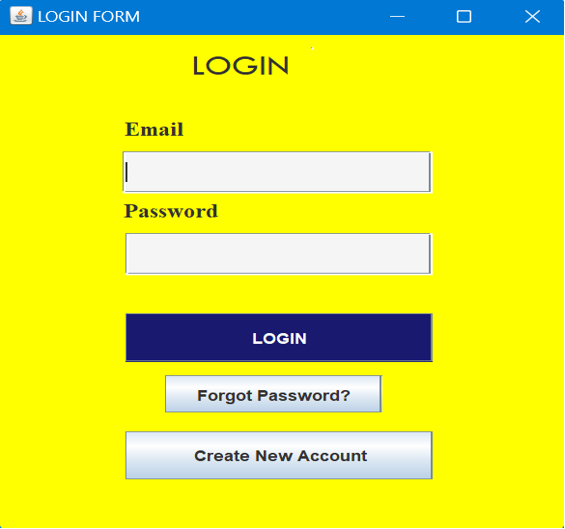
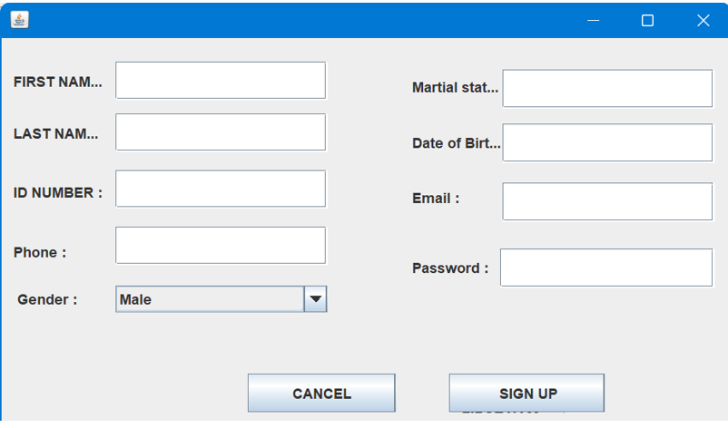
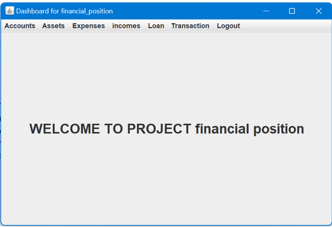
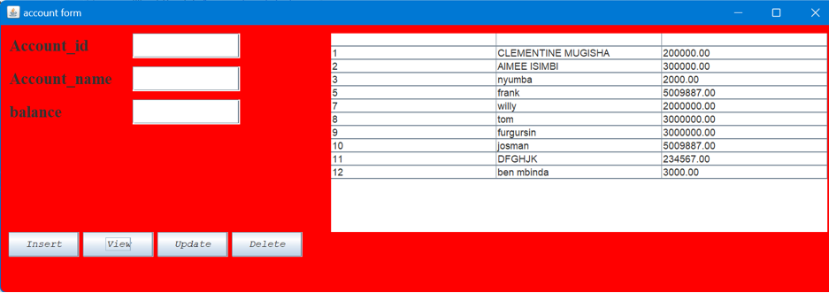
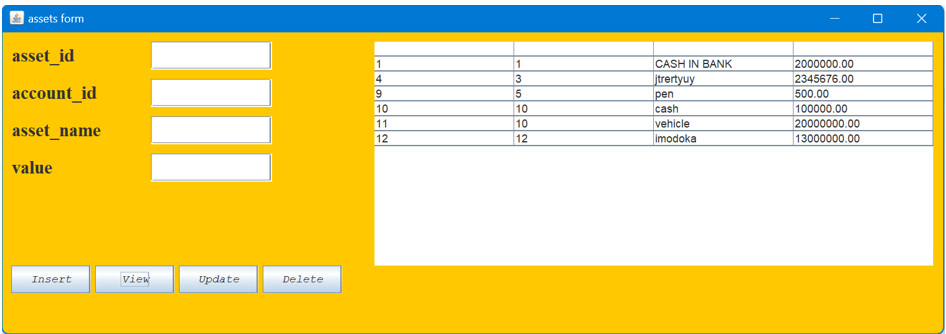
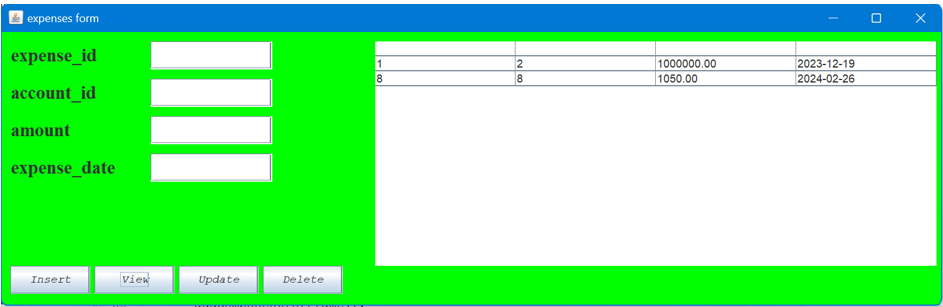
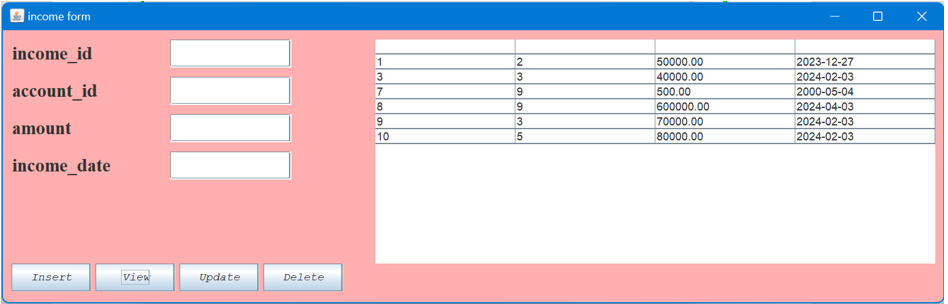
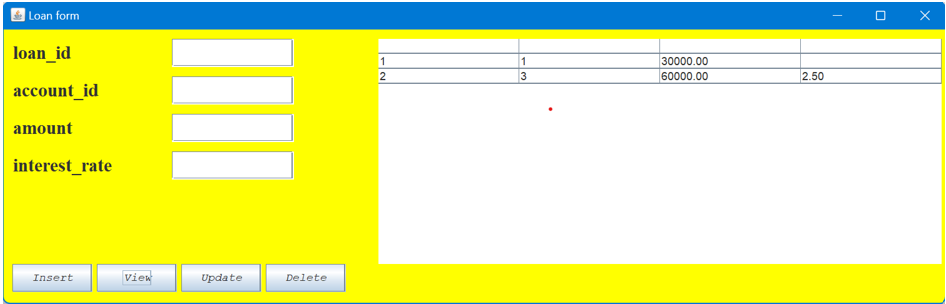

Database name used: financial_management_system.
This is table is table that will be only created by admin and will hold other system users apart from admin it will give them email and password that they will use to login. Note: the created user will not have same ability and right in the system.
This table to contain all accounts holders in the organization and will be created by system admin and few allowed user depending on user type.
this was a database table where deal with assets which was added by business clients
this table indicates expense which was added by accounts holders
this table indicates incomes which was added by accounts holders
this table indicates loans which was added by accounts holders
fname, lname: The columns which are represents first name and last name of user.
phone: The column which are represents telephone number of user.
gender: The column which are represents or store gender of user like female and male.
martial_status: The column which are represents martial status of user like single,married,divorced,…..
DoB: The column which are represents Date of Birth of user.
Email: The column which are represents Email of given user.
Password: The column which are represents password of the user.
In this chapter I will be describing how powerful general purpose programming language was used to create the analyzed system. Under this chapter I will undergo full detail of how everything will function together with database that have been describe above and how it cope with full analyzed system.
3.2 Tools used to develop this system in java programming:
Eclipse IDE: an integrated development environment used in computer programming. It contains a base workspace and an extensible plug-in system for customizing the environment. It is the second-most-popular IDE for Java development, and, until 2016, was the most popular.
this was the first page of the system where system will choose destination depending on the function he/she possess in the organization where he need to log in. if he has not account he may create it and comes as signup form
if he don’t has account he receive this signup form reveal like this
With this page administrator will be informed what tasks can system administrator do in this system. like adding new account holders for those who need the service of organization. This menu also indicates what field an administrator should manipulates whether he required to fill other tables in database this is where the actions should be indicated.
When you tap on taskbar it provides the to the administrator a form he needs on these form is where view ,delete, update, and insert
ACCOUNTS FORMwhen admin press on accounts taskbar it provides this form and on that form it is where CRUD illustrated
this is a form where the assets of holders were interred in CRUD
this is a form where the expenses of holders were interred and recorded in CRUD
this is a form where the income of holders were interred and recorded in CRUD
this is a form where the loans of holders were interred and recorded in CRUD
this is a form where the transaction of holders were interred and recorded in CRUD
conclusionBy concluding this chapter concerns with java programming especially in my developed system, we can say that I have final product that I was expecting to have it, the manipulation of data is going well the design is there with special appearance ,but there much to go on and that need to be improved will be gained from external view apart from system developers